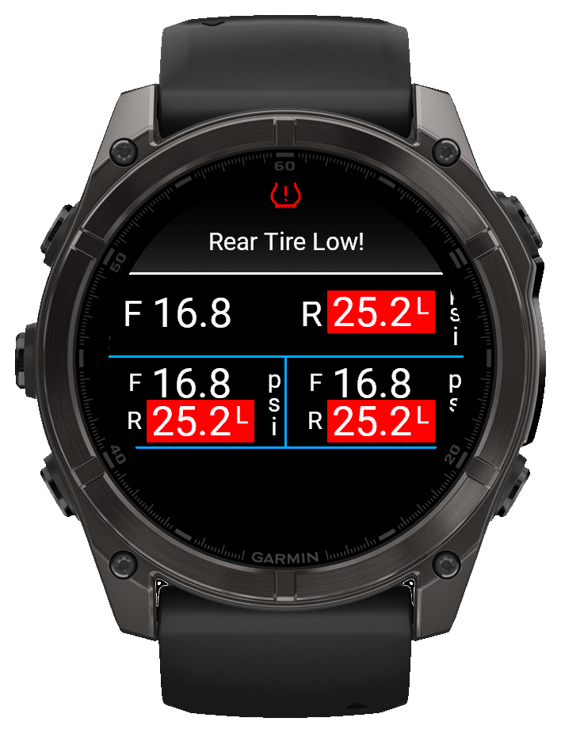

Real-time pressure warning on the ride screen
·
View Alert Demo

Garmin watch layout with popup and vibration alerts
·
View Alert Demo
Works with Quarq TyreWiz, Quarq TyreWiz for Moto, and Zipp 303 SWPopup, audible, and vibration alertsCustomizable layouts, colors, and labels
Ride confidence
Know when pressure really changed
Ever think a tire felt low after a hard hit, then stop to check but everything was fine? TubeWitch shows whether that brutal rock strike, thorns, or debris actually caused pressure loss, so you can avoid unnecessary stops and keep riding with confidence. If you really are losing air, TubeWitch will give you audible and popup alerts based on real pressure data, so you can bail before hitting that next big jump or descent.
TubeWitch can even keep watch in the background, so you can leave your map or favorite screen up and still get audible and popup alerts.
Garmin tire pressure
Show SRAM/Quarq TyreWiz tire pressure on a Garmin device
TubeWitch is a Garmin data field for riders who want Quarq TyreWiz 1.0 and 2.0 sensor data on a Garmin Edge device or compatible watch.
Display layouts and labels are flexible, while audible, pop-up, and vibration alerts are configurable to avoid nuisance duplicate alarms.
Quarq TyreWiz, Quarq TyreWiz for Moto, and Zipp 303 SW
TubeWitch supports Quarq TyreWiz 1.0 and 2.0 sensors, Quarq TyreWiz for Moto sensors, and Zipp 303 SW wheels that use the integrated Zipp AXS Wheel Sensor.
It puts SRAM/Quarq TyreWiz pressure data on Garmin screens without relying on the older TyreWiz data field.